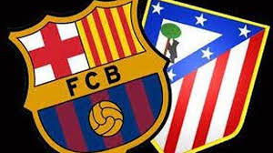

Ningún torneo tiene la emotividad de la Copa y difícilmente hay un club más respetuoso con su mística que el Athletic de la misma manera que no se cuenta uno más campeón que el Barça. La historia de la competición está llena de episodios sorprendentes, de jugadas singulares, de noches épicas o de partidos vibrantes como el de anoche en el Camp Nou. El Athletic ofreció media parte para recordar por su exuberancia física, su organización táctica y su capacidad para desnudar al Barça (0-1), y el Barcelona reapareció después del descanso para reconducir la situación con su gen ganador y firmar un gran remonte (3-1).
Apostó Luis Enrique por el tridente y, por si acaso, hizo sitio en el banquillo para Iniesta y Busquets, recién salidos de un proceso febril, señal de que no se acababa de fiar del 1-2 de San Mamés. No parecía haber problemas de delanteros ni tampoco de defensas, porque la presencia de Vermaelen y Piqué garantizaba aparentemente una salida limpia del balón, sino que el nudo estaba en la media por la presencia como medio centro de Mascherano. El Jefecito no es rápido ni preciso, dos condiciones imprescindibles para combatir la presión alta y la intensidad del Athletic, que defendió con tres laterales, seguramente para combatir la velocidad de Messi, Luis Suárez y Neymar.
Los puntas del Barça quedaron desconectados y en cambio atacaba muy bien el Athletic. Al cuarto de hora los rojiblancos ya contaban tres ocasiones (Aduriz, Williams, Eraso) y un gol de Williams, excelente en el desmarque y la definición, asistido por Aduriz, intimidador en el área, excelso como volante, indetectable para los medios del Barça. No daban pie con bola los azulgrana, igual de irreconocibles y desnortados que en Málaga, sometidos por un valiente, organizado y bien trabajado Athletic. El encuentro solo tenía una dirección y las llegadas y ocasiones se sucedían en el área de Ter Stegen. Jugaba el Barça al pie, sin movilidad, reactivo, inmovilizado por los chicos de Valverde.
La desesperación de Messi era tan gráfica como la de Luis Enrique. Ambos simbolizaban el desconcierto del Barça. No sabía generar situaciones de superioridad, no salía de su cancha, no podía alcanzar el campo abierto, no atinaba a superar el acoso terrible del atrevido Athletic frente al balcón del área de Ter Stegen. Nunca jugó por otra parte al rechace o al pelotazo, a las segundas jugadas o al fútbol aéreo, siempre superado en el cuerpo a cuerpo, únicamente redimido por Neymar. El brasileño se batió en solitario contra el Athletic, a veces con finura, en otras con bravura, por momentos brillante y en ocasiones comediante, excesivamente individualista, reducido al final por Balenziaga.
El lateral derribó a Neymar después de un mal control de Lekue y el árbitro optó por mostrar la tarjeta amarilla al zaguero cuando los azulgrana pedían la roja por entender que no mediaba nadie ante Herrerín. Messi tiró fuera la falta en una de las pocas opciones del Barça si se exceptúa un gol anulado a Vermaelen a la salida de un córner, todavía con 0-0. No definían bien Messi ni Neymar, no entraba en juego Suárez y no mandaba Mascherano. El encuentro solo se calmó cuando descansó por un momento el Athletic después de un desgaste monumental que muy bien pudo haber acabado con más diferencia a su favor que el 0-1.
Los azulgrana despabilaron después del descanso, serenados por Sergi Roberto y dirigidos por Messi, protagonistas de una jugada muy propia del repertorio azulgrana, un tuya-mía muy bien trenzado y rematado por Suárez. El Barça dio un paso adelante, se alejó de su portería mientras parecía haber reventado el Athletic, aliviado por las carreras de Williams. No le quedó más remedio a Valverde que refrescar al equipo desde el banquillo mientras Neymar continuaba sacando faltas al Athletic y la afición que solo llenaba medio campo no paraba de pedir tarjetas al árbitro Hernández Hernández.